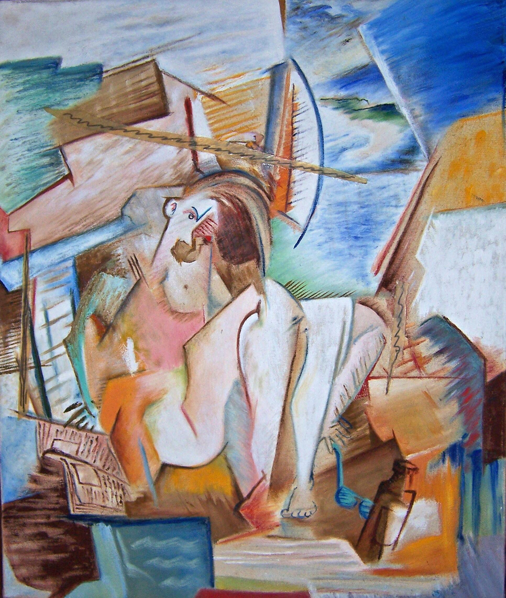

Nature’s Favorite Formula
Long before da Vinci sketched the Vitruvian Man, ancient Indian scholars like Acharya Pingala (3rd century CE) mapped the "divine ratio" in art and architecture.

The Chandaḥśāstra reveals sacred geometry—later known as the Fibonacci sequence—proving beauty isn’t random; it’s mathematically orchestrated.

From Temples to Canvases: A Global Journey
Fibonacci popularized the sequence in 13th-century Europe, but his Liber Abaci credits Indian and Arab mathematicians. Renaissance artists, smitten by this "golden" rule, wove it into masterpieces. Yet the origins—rooted in South Asian temples—often fade behind Eurocentric narratives.

Why Dynamic Symmetry Still Thrives
Like a spider’s web or a nautilus shell, dynamic symmetry balances chaos and order. My art harnesses these timeless grids, where every line hums with ancestral wisdom. It’s not just math—it’s the silent pulse between creation and cosmos.

Honoring the Architects of Beauty
From Pingala’s sutras to Fibonacci’s ledger, this knowledge bridges millennia and continents. When we use dynamic symmetry, we don’t just draw—we echo the voices of those who first decoded nature’s elegance. Their legacy? Art that feels alive.
Think of the golden ratio as a musical scale—the same notes, infinite harmonies. Your brush? The conductor.

Conclusion: Nature vs. Nurture? Think Again.
So, to those who believe great artists are only born—that their skill is pure "Nature" and not "Nurtured"—consider this: The masters didn’t just rely on talent. They studied nature’s hidden math, turning intuition into intention.
The secret? Even the so called "untalented" can wield genius—if they learn to speak nature’s language. After all, the golden ratio doesn’t play favorites.

Richard Diaz
Think of art like a great meal—the subject is the dish (what’s on the plate), the form is the recipe (how it’s cooked), and the content? That’s the chef’s secret ingredient—the "why" that makes it unforgettable. Dig deeper, and you’ll taste the full story.